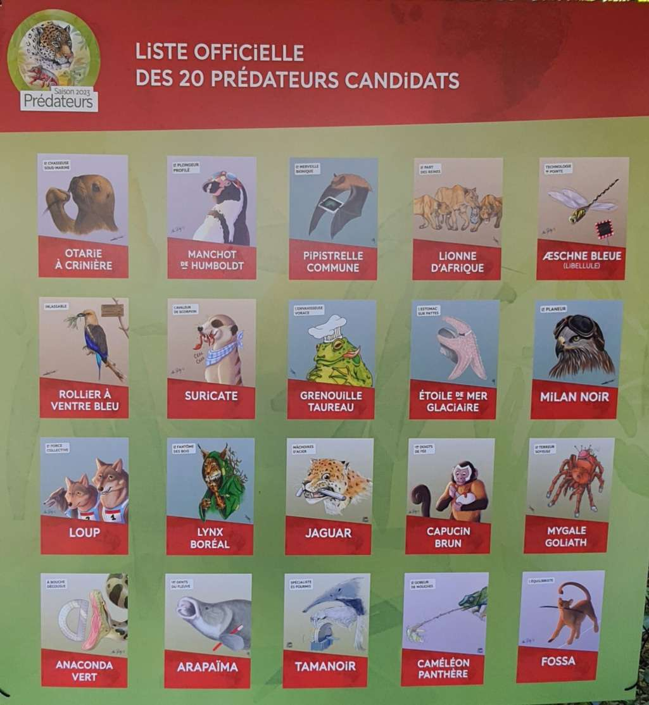
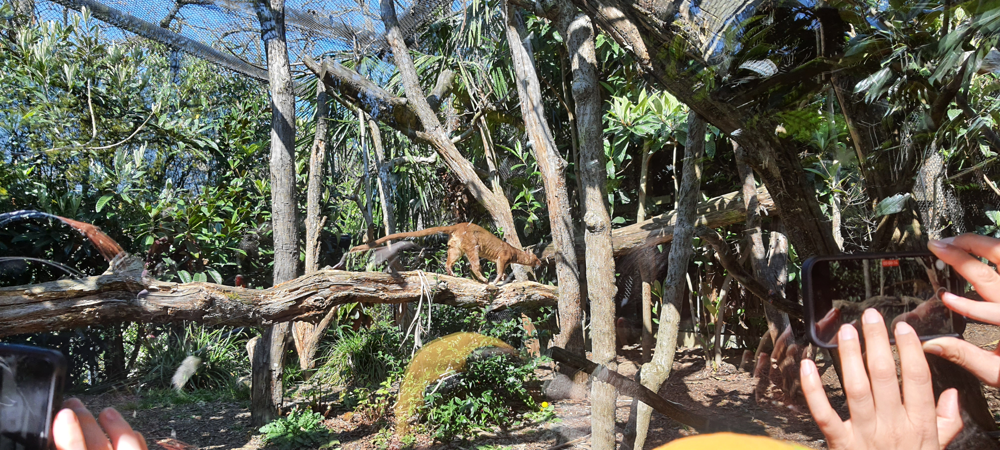

L'événement 2023
Le parc zoologique de Paris ou Zoo de Vincennes est un zoo que vous pouvez visiter avec votre famille,
et apprenez autant que possible sur ces animaux. Il y a 6 zones bien distinctes et fidèles aux environnements et habitats naturels des animaux.
Programme de l'événement
Notre équipe, composé de 4 personnes, est allé au zoo le samedi 8 avril 2023.
Nous sommes allés à ce zoo car il proposait la saison des prédateurs qui est une période où les chasseurs deviennent les vedettes du zoo. Ainsi chaque prédateur était présenté avec son talent dans la nature comme le lynx boréal qui est discret ou encore le jaguar avec sa machoîre d'acier. 20 candidats sont sélectionnés et on pouvait voter pour notre favoris.

Mais il y avait surtout un prédateurs qui nous avait fait venir dans ce zoo, c'est le fossa.
Le fossa est un mammifère féliforme de la famille des Eupleridae. Dans le parc, y a un mâle et une femmelle et récemment le mâle a été échangé avec un autre venant d'allemagne.
Cette échange va permettre aux fossas de se reproduire, encore, car l'ancien mâle fossa avait donné naissance avec la femelle toujours dans le parc à trois bébés.
Cette espèce est en danger d’extinction et c’est la raison de la présence de cet animal au zoo, en les protègeant des dangers extérieurs et en les faisant se reproduire, le fossa sera sauvé.
Pour le bien-être des fossas, la stimulation est nécessaire, pour ce faire, on peut stimuler n’importe lequels de leurs sens. Par exemple, la vue en modifiant les emplacements de certains éléments de la cage ou l’odorat avec différents arômes.

Pour plus d'information sur le fossa :
Cliquez ici
Nos témoignages
Nous avons demandé à une employé et à deux visiteurs quelques questions concernant les événements des nouveaux animaux qui arrivent dans le parc.
L'employé :
Rédaction:
Les visiteurs :
Rédaction:
Légende :
Nous: bleu
Fille: vert
Garçon: : rouge
- Nous: Alors quel animal avez-vous préféré ?
- Fille: Enfin, moi j'ai bien aimé les otaries personnellement parce que il y avait un petit spectacle et tout, c'était sympa, c'était mignon. Pour toi ?
- Garçon: La grenouille tomate, c'est un banger la grenouille.
- Nous: Aimeriez-vous l'avoir chez vous ?
- Fille: Je sais pas si j'aimerais une grosse otarie dans mon salon. Peut-être la grenouille à la limite.
- Garçon: Ouais, si il y a assez de place, pourquoi pas dans un petit étang ? Je sais que j'ai un ami qui a des grenouilles chez lui, c'est sympa.
- Fille: Je mettrais l'otarie avec la grenouille. Ouais.
- Nous: Avez-vous déjà visité un zoo ?
- Fille: Je suis déjà venu ici, j'ai visité le zoo de Beauval plusieurs fois donc ouais
- Garçon: Moi juste des parcs naturels mais pas vraiment des zoos, juste des parcs où on peut voir les animaux, mais sinon, pas vraiment.
- Nous: Quelle était votre partie préférée du zoo ?
- Garçon: La présentation des otaries, je pense, c'est sympa.
- Fille: Après au niveau partie du zoo genre zone je sais plus, peut-être la zone vers la serre, Madagascar je crois. Ouais, c'était pas mal ça.
- Garçon:Ouais c'est vrai, je suis d'accord.
- Fille: Si seulement, on connaissait les zones.
- Nous: Que pensez-vous des nouveautés, des nouveautés ?
- Fille: Je vois même pas c'est quoi les nouveautés. Il y avait quoi comme nouveauté ?
- Nous: Il y avait des nouveaux animaux qui sont venus, il y avait le fossa.
- Fille: En fait, on l'a pas vu, on a regardé, il était pas là donc c'est dommage.
- Garçon:Oui, après, tant il y a des nouveautés, c'est bien pour le zoo et ça permet de se renouveler un peu.
- Nous: Ou des suggestions pour des nouveautés à venir ?
- Fille: Des suggestions ? Les animaux,..., euh. Enfin non, c'est pas mal déjà.
- Garçon:Plus de singe, j'aime les singes.
- Fille: Ouais, plus de singes peut-être des gorilles, c'est bien, parce qu'on a vu des babouins. Je sais plus ce qu'on avait vu d'autre.
- Garçon: :Des gros animaux.
- Fille: Ouais, des gros animaux aussi peut-être.
- Nous: Est-ce que vous avez appris des choses ?
- Fille: Bah ouais, je ne suis pas spécialement calée en en animaux donc forcément hein. Après rien qu'avec les otaries, on parle encore des otaries, mais rien qu'avec les otaries avec la présentation. On a appris pas mal de choses.
- Nous: C'est vrai que ça explique pas mal de choses.
- Garçon:Il y avait même les girafes.
- Fille: Ouais les girafes on avait regardé, il y avait des présentations qui ont permis d'apprendre. des choses qu'on sait pas forcément. Enfin on connaît l'animal mais on connaît pas trop les habitudes, les différences et cetera. Voilà.
- Nous: Comptez-vous revenir voir les animaux une prochaine fois ?
- Fille: Pourquoi pas ? Bah si je suis déjà venu une fois, je suis revenu, peut-être y revenir encore une fois hein ?
- Garçon:Oui après moi ouais moi c'est cool ouais, ça peut être sympa.
- Nous: Merci beaucoup.